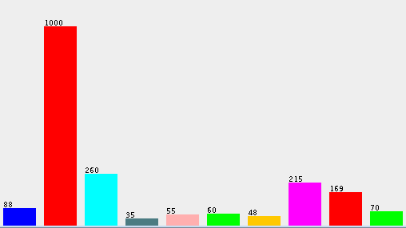

Klasifikace
Metodika
Postupovali jsme podle plánu popsaného v Interim reportu v části “4. Návrh řešení”. Použili jsme program Weka a klasifikační algoritmy J48, Naive Bayes a 3-NN.
Klasifikace
Pro naučení klasifikačního algoritmu jsme náhodně vybrali 500 snímků videa, aplikací připravených skriptů pro zpracování obrazů jsme z nich obdrželi 2000 segmentů, každý obsahoval jednu číslici, tyto číslice jsme manuálně klasifikovali do tříd a připravili soubor ARFF s učícími daty. Poměrné zastoupení instancí jednotlivých tříd v učících datech bylo vzhledem ke způsobu jejich přípravy velmi nerovnoměrné, padesát procent učících instancí tvořily číslice 1, podíl ostatních tříd pak již byl relativně vyvážený.

Pro ověření výsledků učení jsme použili metodu Cross validation s 10 foldy.
Při použití pouze atributů popsaných v Interim reportu (okraje a hodnoty pixelů) jsme se setkali s tím, že klasifikační algoritmy velmi často zaměňovaly číslici 1 za číslici 8, občas také za číslici 0. Přidáním atributu poměru mezi šířkou a výškou segmentu se tento problém odstranil. Vliv tohoto atributu je dobře vidět v klasifikačním stromu vygenerovaném algoritmem J48, blízko vrcholu stromu se vyskytuje rozvětvení:
woverh <= 0.333333: 1 (1000.0)
| woverh > 0.333333
Dalšího několikaprocentního zlepšení celkové správnosti jsme dosáhli přidáním atributu procentuální podíl černých pixelů.
Celková správnost
Algoritmus: čas vytvoření modelu: celková správnost:
Naive Bayes 0,38 s 99,5 %
J48 1.11 s 99,3 %
3NN / 99.5 %
Výpisy z logů programu Weka jsou přiloženy v závěru této stránky.
Naive Bayes
Time taken to build model: 0.38 seconds
=== Stratified cross-validation ===
=== Summary ===
Correctly Classified Instances 1990 99.5 %
Incorrectly Classified Instances 10 0.5 %
Kappa statistic 0.9929
Mean absolute error 0.001
Root mean squared error 0.0316
Relative absolute error 0.7045 %
Root relative squared error 11.8786 %
Total Number of Instances 2000
=== Detailed Accuracy By Class ===
TP Rate FP Rate Precision Recall F-Measure ROC Area Class
0.989 0.001 0.989 0.989 0.989 0.994 0
0.999 0.001 0.999 0.999 0.999 0.999 1
1 0 1 1 1 1 2
1 0 1 1 1 1 3
1 0.001 0.982 1 0.991 1 4
0.967 0.001 0.983 0.967 0.975 0.991 5
0.979 0.001 0.979 0.979 0.979 1 6
0.991 0.001 0.991 0.991 0.991 0.997 7
0.994 0.001 0.994 0.994 0.994 1 8
0.971 0.001 0.971 0.971 0.971 1 9
Weighted Avg. 0.995 0.001 0.995 0.995 0.995 0.999
=== Confusion Matrix ===
a b c d e f g h i j <-- classified as
87 1 0 0 0 0 0 0 0 0 | a = 0
0 999 0 0 0 0 0 0 1 0 | b = 1
0 0 260 0 0 0 0 0 0 0 | c = 2
0 0 0 35 0 0 0 0 0 0 | d = 3
0 0 0 0 55 0 0 0 0 0 | e = 4
0 0 0 0 1 58 1 0 0 0 | f = 5
0 0 0 0 0 1 47 0 0 0 | g = 6
1 0 0 0 0 0 0 213 0 1 | h = 7
0 0 0 0 0 0 0 0 168 1 | i = 8
0 0 0 0 0 0 0 2 0 68 | j = 9
J48
Time taken to build model: 1.11 seconds
=== Stratified cross-validation ===
=== Summary ===
Correctly Classified Instances 1986 99.3 %
Incorrectly Classified Instances 14 0.7 %
Kappa statistic 0.9901
Mean absolute error 0.0017
Root mean squared error 0.0375
Relative absolute error 1.185 %
Root relative squared error 14.0753 %
Total Number of Instances 2000
=== Detailed Accuracy By Class ===
TP Rate FP Rate Precision Recall F-Measure ROC Area Class
0.989 0.001 0.989 0.989 0.989 0.994 0
0.999 0.002 0.998 0.999 0.999 0.999 1
0.996 0 1 0.996 0.998 0.998 2
1 0.002 0.921 1 0.959 0.999 3
0.982 0.001 0.982 0.982 0.982 0.99 4
0.967 0.001 0.967 0.967 0.967 0.982 5
0.979 0.001 0.979 0.979 0.979 0.989 6
0.995 0.001 0.991 0.995 0.993 0.997 7
0.982 0 1 0.982 0.991 0.991 8
0.957 0.001 0.971 0.957 0.964 0.978 9
Weighted Avg. 0.993 0.001 0.993 0.993 0.993 0.996
=== Confusion Matrix ===
a b c d e f g h i j <-- classified as
87 0 0 0 0 0 0 1 0 0 | a = 0
0 999 0 1 0 0 0 0 0 0 | b = 1
0 0 259 1 0 0 0 0 0 0 | c = 2
0 0 0 35 0 0 0 0 0 0 | d = 3
0 0 0 0 54 0 0 0 0 1 | e = 4
0 0 0 0 1 58 1 0 0 0 | f = 5
0 0 0 0 0 1 47 0 0 0 | g = 6
1 0 0 0 0 0 0 214 0 0 | h = 7
0 2 0 0 0 0 0 0 166 1 | i = 8
0 0 0 1 0 1 0 1 0 67 | j = 9
3nearest neighbours
Time taken to build model: 0 seconds
=== Stratified cross-validation ===
=== Summary ===
Correctly Classified Instances 1990 99.5 %
Incorrectly Classified Instances 10 0.5 %
Kappa statistic 0.9929
Mean absolute error 0.0014
Root mean squared error 0.0289
Relative absolute error 0.9837 %
Root relative squared error 10.8384 %
Total Number of Instances 2000
=== Detailed Accuracy By Class ===
TP Rate FP Rate Precision Recall F-Measure ROC Area Class
1 0.001 0.989 1 0.994 1 0
1 0.001 0.999 1 1 1 1
1 0 1 1 1 1 2
1 0.001 0.972 1 0.986 1 3
1 0.001 0.982 1 0.991 1 4
0.967 0.001 0.983 0.967 0.975 0.983 5
0.979 0.001 0.979 0.979 0.979 0.989 6
0.995 0.002 0.986 0.995 0.991 0.997 7
0.988 0 1 0.988 0.994 1 8
0.943 0.001 0.985 0.943 0.964 0.986 9
Weighted Avg. 0.995 0.001 0.995 0.995 0.995 0.998
=== Confusion Matrix ===
a b c d e f g h i j <-- classified as
88 0 0 0 0 0 0 0 0 0 | a = 0
0 1000 0 0 0 0 0 0 0 0 | b = 1
0 0 260 0 0 0 0 0 0 0 | c = 2
0 0 0 35 0 0 0 0 0 0 | d = 3
0 0 0 0 55 0 0 0 0 0 | e = 4
0 0 0 0 1 58 1 0 0 0 | f = 5
0 0 0 0 0 1 47 0 0 0 | g = 6
1 0 0 0 0 0 0 214 0 0 | h = 7
0 1 0 0 0 0 0 0 167 1 | i = 8
0 0 0 1 0 0 0 3 0 66 | j = 9
Novinky:
[20/05/2013]
Spuštìny webové stránky
[26/05/2013]
Interim report
Související odkazy:
WekaStránky předmětu